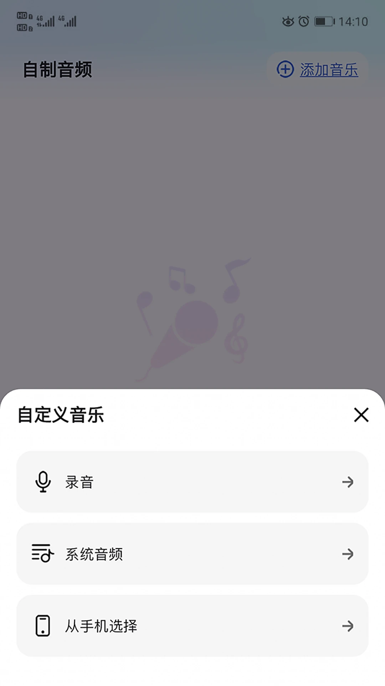

I own 用了一年，哪些功能成了日常，哪些早就删了
从去年春天装到现在，感恩日记写了三百多条，睡前音频合成了十几版，聊聊这款自我成长应用在日常里的真实位置。
去年三月装的 I own，当时是朋友推荐——说 I own官网 把感恩日记、肯定音频、睡前白噪音揉在一起，不像市面上那些花里胡哨的打卡 App。我那阵子刚好想把睡前刷手机的习惯改掉，就从官方下载拿了一份装上。
当初为什么装：一两句带过
说实话当初装它的动机很单纯——想找一个能让我躺下来不刷短视频的东西。之前试过冥想 App，但引导语总让我觉得"被说教"，听五分钟就烦躁。I own 的界面很干净，没有倒计时、没有连续打卡的小红点，感觉没那么有压力。
变化三连
哪点越用越顺手：感恩日记的三层记录法
这是我用得最多的功能，现在每天睡前花两分钟写。刚上手的时候觉得"三层"是个噱头——不就是感恩日记吗，写一句不就完了。但写了两周之后发现，"看见→感受→流动"这个结构真的不一样。
第一层要写一件有画面的事。不是"今天感恩生活"，是"楼下便利店那个阿姨给我多装了一个袋子"。第二层要写身体反应——"嘴角不自觉往上扬了一下"、"肩颈那里松了一瞬"。第三层写流动——"回去路上脚步比平时轻快了点"。三层下来，一条感恩日记变成了一个完整的小片段，而不是一句空洞的口号。

我中间有过一段写不下去的时期——连续三四天都是"今天没什么好感恩的"。后来才想明白，它不只是让我记录"开心的事"，而是让我看见"这一天里有一件事让我没那么累"。某个被忽视的小便利、一次没疼的膝盖、手机电量比预期撑得久——这些都算。想通这点之后，记录就顺畅了。
哪点越用越烦：音频合成的背景音选择
灵魂回响板块的音频合成功能，我总共合成了十几版。问题出在背景音上——系统提供的雨声、白噪音、轻音乐三种选项，轻音乐容易分心这个设计在I own文档里写了，但我还是踩了好几次坑。
合成的时候选了一段轻音乐当背景，结果睡前听的时候脑子里全是旋律，那句肯定音频反而听不清了。反复试了四五次才搞明白——背景音的作用是让大脑放松，不是让它跟着哼。最后固定用了雨声，效果稳定。
更烦的是安装包偶尔会提示解析包错误，删掉重下一遍就好，但第一次遇到的时候吓了一跳，以为手机出问题了。后来文档里说这是传输层面的事，不是设备也不是应用本身的问题，才放下心来。
哪个功能成了每天离不开的：睡前音频定时关闭
不是感恩日记——感恩日记偶尔可以跳过一天，但睡前音频现在几乎每天都开。我用自己合成的肯定音频，背景音是固定的雨声，定时十五分钟，外放（手机放床头柜）。这三个参数是文档里给的硬规矩：音量守六成、定时关闭、不戴耳机听一整夜。

刚开始没设定时，放着放着就睡着了，第二天起来觉得头懵懵的——后来才知道一直放着会打断深度睡眠。戴耳机听一整夜也试过，第二天耳道闷得慌。现在固定外放加定时，十五分钟后自动停，刚好在我迷迷糊糊还没睡着的时候切完。
观感修正：当初高估了什么，低估了什么
刚装的时候我以为这是一个"自我提升工具"——每天用它写几条、听几段，就能变成更好的自己。用了一年之后发现，它根本不是什么工具，是个"安静的角落"。
它不催我打卡，不提醒我"你今天还没写"，没有排行榜，没有"连续 X 天"的成就感（或者说焦虑感）。想写就写，不想写就跳过一天——感恩日记不是任务，没有"漏了一天就前功尽弃"这回事。这一点反而是它最难得的地方。
我当初还低估了三层记录法的价值。以为是多此一举的结构设计，实际上它在帮我训练一种能力——把注意力从"我今天怎么样"拉到"今天发生了什么具体的事"。这个能力不只在写感恩日记的时候有用，在工作里开会、写报告的时候也会冒出来——开始不自觉地想"这件事的具体画面是什么"，而不是停留在抽象的情绪词上。
去留结论：会不会卸载
不会。但也不是每天都用它。
感恩日记现在大概每周写四五条，睡前音频几乎每天都开。其他功能——比如那些计数器、个人资料页——碰过几次之后就再也没点开过了。它留在我手机里的理由很简单：有一个功能真的帮我改掉了睡前刷短视频的习惯，还有一个功能让我每天多花两分钟看一眼身边具体的小事。
什么信号出现就该换了？如果哪一天它开始加"连续打卡"、"成就徽章"、"社区"这些东西——那我可能会找个替代品。但现在它还是那个安静的、不会催我的角落，那就接着留着。要是你也想用，相关资料在 GitHub、Gitee、GitCode 都有同步，按你习惯的平台选就行。